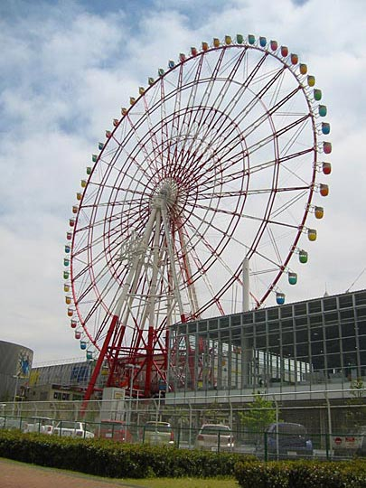

Photos from our second trip to Japan, 18 March–2 April 2005 are on Flickr
Japan, 18-28 April 2003
- Index
- Arrival, Day 1: Tsukiji Fish Market; Hama-Rikyu Gardens [1.66Mb]
- Day 1 (continued): DesignFesta [1.25Mb]
- Day 2: Meiji Shrine and inner garden; Harajuku; Nezu Institute; Aoyama cemetery [2.38Mb]
- Day 3: Ghibli Museum, Mitaka; Shinjuku [1.66Mb]
- Day 4: Hakone: Taisekan ryokan [1.81Mb]
- Day 5: Hakone: Taisekan; Hakone Museum of Art; ropeway to Owakudani; Lake Ashino-ko [1.93Mb]
- Day 6: Kamakura [4.37Mb]
- Day 7: Senso-ji temple; Asakusa; Joe [1.46Mb]
- Day 8: Koishikawa Korakuen garden; Seibu department store; Ginza [1.2Mb]
- Day 9: Shinjuku-gyoen gardens [2Mb]
- Day 9 (continued): Harajuku, Ueno Park and the Tokyo National Museum, Roppongi Hills [1.59Mb]
Since I'm using my diary to jog my memory, I'm writing this diary-style. Kelly's diary (much more in-depth and personal), can be found here.
Thursday-Friday 18-19 April: Arrival; Tsukiji Fish Market; Hama-Rikyu Gardens
Lying on my back on the floor in our room in Fukudaya ryokan (Japanese-style hotel) in Tokyo! Relief. Horrible flight. (Flew over Denmark, Russia, Siberia, Northern China.) Puked after touch-down at Narita airport. The deceleration did it. 3 silly in-flight movies. Die Another Day, Harry Potter II (both in Japanese :), Maid in Manhattan. I was feeling so queesy the schmaltz made me all emotional.
In a doze all the way to Tokyo (very lucky to get a Narita Express train that left within 5 minutes, going all the way to Shibuya.) Kelly was trying to point out all the neon lights, but I was hypnotising myself to sleep in order to feel better.
But found my second wind emerging from the train at Shibuya station. Walking out at the Hachiko exit (named after the faithful hound) was just staggering.
The feeling was like being in Piccadilly Circus for the first time, 10 years ago, but the number of people, and the amount of neon and building-size video screens make Piccadilly Circus look provincial.
The feeling of being surrounded by only Japanese people was also strange. The people seemed beautiful and confident and at home, different body language from when you see them in the West. We arrived on Friday night, in an area renowned for its nightlife, so it was heaving with all sorts of people. Young cuties, various types of salesmen and hustlers, drunks, hippies, etc. [Later on we'd get to know this area and scene better.] Interesting sights, but we had heavy loads and were dead tired, we took 10 minutes just getting our bearings. But we walked just right and Hotel Fukudaya looked just like in the picture on the website. 2 sweet old ladies at front desk. Very little English, but remarked "kawaii" (cute) of Kelly's watch (a child's watch from Argos). The room smells of the tatami mats — a bit like a hut smell. Nice. Went out for some food at AM-PM (Seven-Eleven clone). Best was the clear litchi jelly. Had a different fruit jelly every night thereafter.
The litchi jelly, toothpick standing up in it.
Kelly in her yukata, enjoying the first cup of green tea.
Thursday 18 April 2003
Very long — and exhausting — day. Slept well — until about 2am. After that, just lay still and rested, but no more sleep (very comfortable beds — good to sleep on the floor). Got up and left before 6 for the Tsukiji fish market.
Already light, we walked by side streets to Shibuya station (the hotel's about 15m walk from the station.) Walked through crowds of denizens of the night, emerging from nightclubs and love hotels. Sleazy-looking streets crawling with partied-out, sometimes lurching, kids, some doing their makeup on the sidewalk. And crows. Crows everywhere, cawing incessantly and eating garbage. Beautifully ugly sitting in pink-blossomed trees.
Early morning Shibuya. Unfortunately we photographed neither the revellers nor the crows!
This fugu restaurant (note the fishtank at ground level) was on Dogon-zaki on the way to the hotel.
First major confusion on the subway, trying to find the correct line to Tsukiji-Shijo. Also our first demonstration of Japanese helpfulness. Kelly asked a woman stepping off a train for directions, and she proceeded to walk us all the way to our platform, quite far and down several flights of stairs. (Our Tokyo City Atlas also proving itself indispensable, as it did for the rest of the trip.)
At Tsukiji we found the external produce market first, walked through it and entered the fish market from the bay's side. Alternately fascinating and frightening — frequent feeling of being out of place. No concessions for consumers or tourists, petrol-powered trolleys zooming around constantly so you can never relax. Endless labyrinths of stalls around crowded narrow alleyways and wider paths along which the trolleys zoom.
Narrow aisles and stalls
Warehouses with racing trolleys
We weren't the only gaijin there
The most amazing sights... crates of octopi like red flowerbeds, mussels the size of legs of lamb, tuna the size of cows, schools of tiny fish swarming in bubbling fishtanks, little pipe-nosed pencil fish, shrimps with tiger stripes and tails like butterfly wings, enormous sea urchins, sea-cucumbers, rooi-aas, dozens of kinds of shellfish, some you'd collect just for the shells, lobster with claws bigger than my hand, etc. Some extra memorable sights: the stacks of big fish, still gasping — not dead like you'd see them in fishmongers. Bright red fish with enormous eyes like a cow (deep-water fish, I guess). A trolley passing by, laden with cloth sacks, some of which are mysteriously thrashing. People sawing up the big frozen tuna — first into quarters lengthwise, then cross-sections. Sawn in half it looks like layers of geographic strata.
Those mussels are about the size of two hands each.
Octopus in bloodstained water
Red shrimp
Frozen tuna
Tuna being sawed into quarters lengthwise
One particularly monstrous unfrozen specimen
Great sushi breakfast, although we forgot to photograph what we had. Kelly had a small bucket full of tuna sashimi, I was brave and had the sushi assortment. Ate some things I'd never expect to. Sushi covered in soy whey. Big balls of salmon roe.
Walked to Hama-Rikyu garden nearby, which opens at 9am — a perfect Japanese garden, although the light seemed wrong! Should've been emerald, instead all bleached out like Durbanville by the sky's white haze. Everywhere the little gnarled black pines like big bonsai. One enormous pine 300 years old. Awesome skyscrapers rising in the background. We saw one of the little trees being pruned — more like manicured — so the natural appearance is an illusion.
Hama-Rikyu garden
Open lawns, magnificent trees, white sky, and an untidy jumble of skyscrapers and cranes
The pride of the garden, a 300-year old black pine. Like many trees in the gardens we saw, the branches are tightly wrapped in fabric. I don't know why.
The tea-house in the tidal lake (the garden ajoins Tokyo Bay — that's also why there's algae in the water). Late sakura still in bloom (like in London too)
 That's Tokyo Tower (modelled on the Eiffel Tower) directly behind Kelly
That's Tokyo Tower (modelled on the Eiffel Tower) directly behind Kelly
Wisteria on the little island on the way to the big island and teahouse
Peonies were just starting to bloom. These are protected behind gossamer-fine netting that still lets butterflies through
Still late cherry blossoms everywhere, and snowdrifts of petals. Unfortunately we didn't have time for tea on the island [we did at another garden later the holiday], because we had to catch the first boat to Rainbow Island. Rainbow Island is a relatively new development, built on reclaimed land in Tokyo bay, connected to the mainland by Rainbow Bridge.
Rainbow bridge in the distance seen from Hama-Rikyu garden
Fun boat ride, underneath Rainbow Bridge, spent the whole time on the boat's roof, buffeted by a warm wind and spray, surrounded by ecstatic little kids on their way to Disneyland, most probably. Awesome, humbling, science-fiction views of Tokyo skyline looking back.

Tokyo skyline and Rainbow Bridge behind us. (Two-story bridge, carrying rail and road traffic.)
Children on the boat en route to Rainbow Island. What looks like a lighthouse ahead is the Maritime Museum, in the shape of a large ship, where our boat moored.
The walk through Rainbow Island to the Tokyo Big Site exhibition centre was a bit of misjudgement. Took a good hour! Fortunately strong wind from behind or we may not have made it. Rainbow Island's a rather unimaginative copy of La Defense in Paris, from the Grande Arche to the Takis mobile sculpture. Obviously ambitious, on a massive scale, but still a bit desolate. Painstaking landscaping, but the trees seem to struggle in the neverending wind. Architecture sometimes laughably kitsch-scifi. Saw a cute dachshund in a pink jersey — long-haired dachshunds are the fashion accessory du jour in Tokyo. We saw countless during the course of the holiday, on street and on TV. Exhausted, we were saved by a Chat Noir coffee shop — modelled on Art Nouveau Paris.
Corny sci-fi architecture on Rainbow Island (Fuji Television Building, I think). In the foreground, natural wild-flower landscaping.
Stylish bridge looking like the one on the 500-Euro note. In the background, a very elegant prism-like skyscraper (although it's smaller than it looks).

Absolutely enormous ferris wheel (one of two) — taller than the one in London? A week later we saw it from a distance at night, beautifully lit like a pinball machine with spiralling lights.
The hopelessly over-inflated architecture of the Tokyo Big Site exhibition centre
Next: Day 1 (continued): DesignFesta